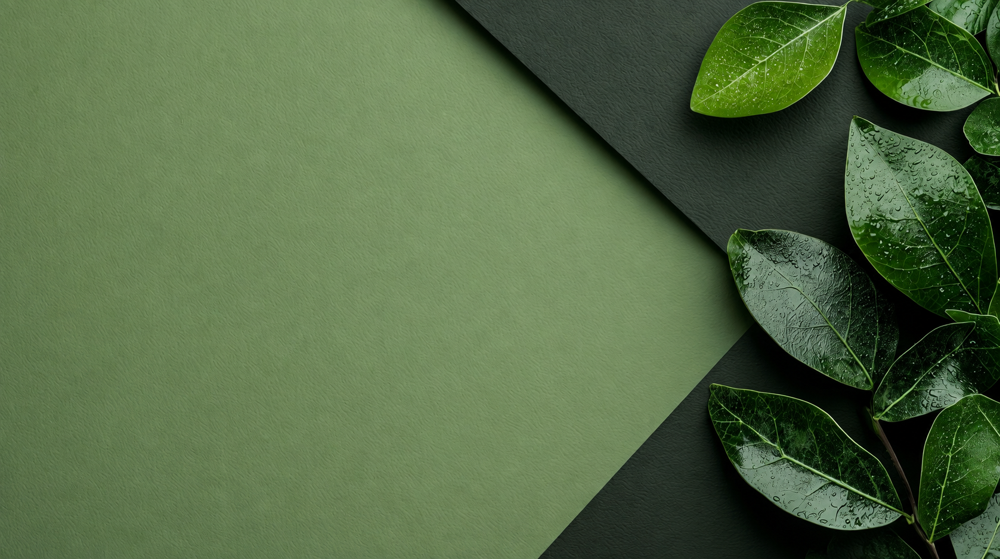
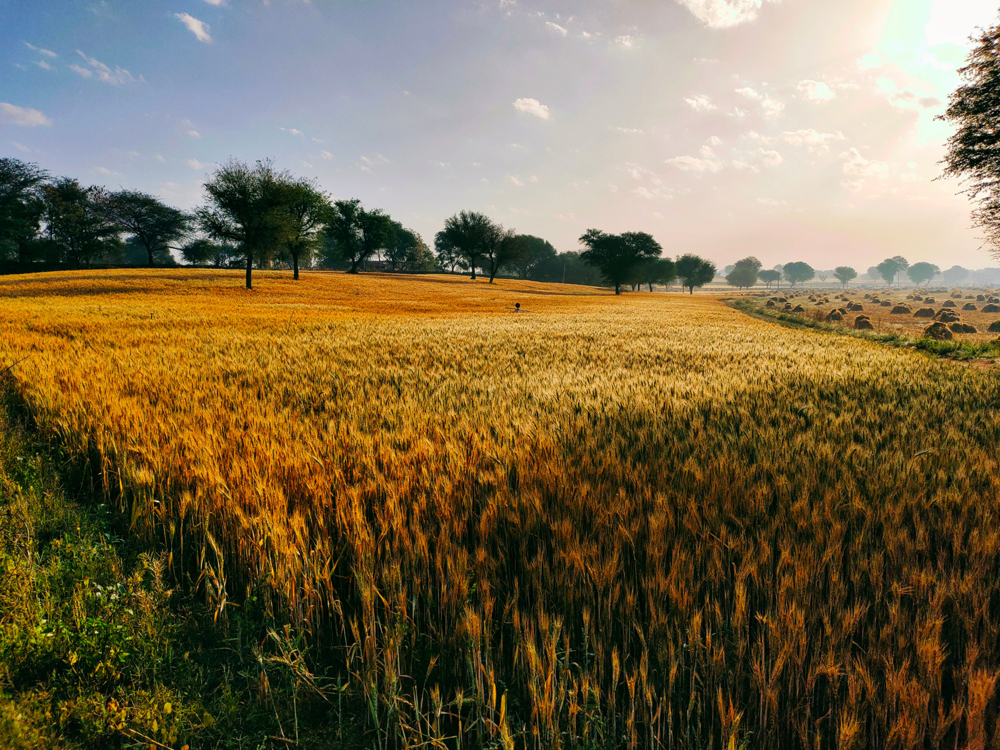

Reflorestamento
Recuperação de áreas degradadas por meio do plantio de mudas nativas e do manejo responsável da flora local.

A BioPreserva é uma iniciativa dedicada à conservação da biodiversidade e à restauração de ecossistemas. Conectamos pessoas e comunidades para proteger espécies, recuperar áreas naturais e incentivar escolhas sustentáveis.
Explore nossa missãoUnimos conhecimento, cuidado e participação para construir um futuro mais equilibrado.
Recuperação de áreas degradadas por meio do plantio de mudas nativas e do manejo responsável da flora local.
Apoio a iniciativas de monitoramento, resgate e preservação de espécies e seus habitats naturais.
Atividades, palestras e materiais educativos que aproximam escolas e comunidades da sustentabilidade.
Mutirões de limpeza, voluntariado e iniciativas que incentivam o cuidado coletivo com o meio ambiente.
Preservar é olhar para a natureza como um todo. Conheça alguns dos temas que orientam nossas ações.
Proteção e valorização de plantas nativas e florestas, contribuindo para a recuperação de áreas degradadas.
Práticas de conservação do solo e das bacias hidrográficas para manter habitats e recursos naturais saudáveis.
Incentivo a formas de cultivo responsáveis, que respeitam os ciclos naturais e reduzem impactos ambientais.

Valorização de paisagens, formações rochosas e ambientes naturais que compõem a riqueza do planeta.
Acompanhamento de ações e indicadores ambientais para avaliar resultados e compartilhar aprendizados.
Quando cada pessoa faz a sua parte, o impacto positivo alcança muito mais longe.
Voltar ao início